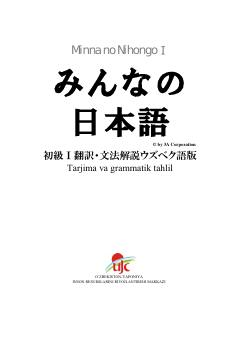

MNYapon tilini boshlang'ich bosqichdan o'rganish uchun o'zbek tilidagi amaliy darslik.
Ushbu qo'llanma yapon tilini o'rganishni boshlovchilar uchun mo'ljallangan mashhur "Minna no Nihongo" darsligining o'zbek tilidagi tarjima va grammatik tahlil qismidir. Kitobda asosiy so'zlar, kundalik muloqot iboralari, grammatik qoidalar va turli mashqlar batafsil tushuntirilgan. O'zbekiston-Yaponiya Inson Resurslarini Rivojlantirish Markazi (UJC) tomonidan tayyorlangan ushbu nashr yapon tilini mustaqil yoki kurslarda o'rganuvchilar uchun juda foydali.